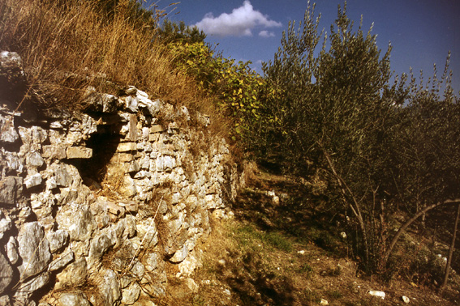

|
mail:
Bill Thayer |
Latine |
Help |
Up |
Home |
The text has been carefully proofread.
Each paragraph number is linked to the corresponding paragraph of the Latin text, which will open in another window. Lacunae are indicated by large spaces: to find them, search for asterisks. For those not particularly interested in the primary source but looking for detailed information, a sort of condensation of Frontinus (by the author's own admission), although with quite a bit of additional material, is also online:
see the article
Aquaeductus
|
||||
Sextus1 Julius Frontinus:
The Aqueducts of Rome
p389 Book II
64 R 2003 Having detailed those facts which it was necessary to state with reference to the ajutages, I will now set down what discharge each aqueduct, according to the imperial records, was thought to have up to the time of my administration, and also how much it actually did deliver; then the true measure, which I reached by careful investigation, acting on the suggestion of that best and most industrious emperor, Nerva.83 Now there were, in the aggregate, 12,755 quinariae set down in the records,84 but 14,018 quinariae actually delivered; that is, 1,263 more quinariae were reported as delivered than were reckoned as received.85 Since I considered it the most important function of my office to determine the facts concerning the water-supply, my astonishment at this state of affairs stirred me profoundly and led me to investigate how it happened that more was being delivered than belonged to the property, so to speak. Accordingly, I first of all undertook measurements of the intakes of the conduits and discovered a total supply far greater — that is, by about 10,000 quinariae — than I found in the records, as I shall explain in connection with each aqueduct.
65 R 2003 In the records Appia is credited with 841 quinariae.86 p391 A gauging of this aqueduct could not be taken at the intake, since there it consists of two channels. But at The Twins, which is below Spes Vetus,87 where it joins with a branch of Augusta, I found a depth of water of •5 feet, and a width of •1¾ feet, making an area of •8¾ square feet,88 twenty-two 100‑pipes plus a 40‑pipe, which makes 1,825 quinariae, — more than the records would have it by 984 quinariae. It was delivering 704 quinariae, — 137 quinariae less than credited in the records; and, furthermore, 1,121 quinariae less than given by the gauging at The Twins.89 A considerable amount of this, however, is lost by leaks in the conduit, which, being deeply buried, does not clearly exhibit them. And yet their presence is plainly indicated by the fact that in very many parts of the City excellent water is met with, which leaks from that aqueduct. But we also detected some illicit pipes within the City. Outside the City, however, on account of the depth of the level, which at the intake is •50 feet underground, the conduit suffers no depredations.
66 R 2003 Old Anio is credited in the records with the amount of 1,541 quinariae. At the intake I found 4,398 quinariae, exclusive of the quantity which is p393 diverted into the special conduit of the Tiburtines,90 — 2,857 quinariae more than is recorded. There were distributed 262 quinariae, before the aqueduct reaches its settling-reservoir. The quantity at the reservoir, determined from the gauges placed there, was 2,362 quinariae, so that 1,774 quinariae were lost between the intake and the reservoir. Down-stream from the settling-reservoir, 1,348 quinariae were delivered, — more than we have stated to be the capacity according to the records by 69 quinariae, but less than we have shown was received into the conduit from the settling-reservoir by 1,014 quinariae. The total which was lost between the intake and the settling-reservoir, amounted to 2,788 quinariae, which I should have suspected resulted from an error of measurement, had I not discovered where it was diverted.91
67 R 2003 In the records Marcia is credited with the quantity of 2,162 quinariae. Gauging it at the intake, I found 4,690 quinariae, — 2,528 quinariae more than appear in the records. There were delivered, before it reaches the settling-reservoir, 95 quinariae; and 92 quinariae were given to supplement Tepula; likewise 164 to Anio. The total delivered before the settling-reservoir is reached, was 351 quinariae. The p395 quantity which is computed at the reservoir from the gauges set up there, along with what is carried around the reservoir and received in the same channel on arches, is 2,944 quinariae. The aggregate of what is delivered above the reservoir or is received on arches is 3,295 quinariae, — more than is set down in the scheduled capacity by 1,133 quinariae, and less than given by the gaugings made at the intake by 1,395 quinariae. After passing the reservoir, it delivered 1,840 quinariae, — 227 quinariae less than we said was set down in the scheduled capacity, and 1,104 quinariae less than is taken from the reservoir upon the arches. The aggregate of what was lost either between the intake and the reservoir or downstream from the reservoir, was 2,499 quinariae, the diversion of which, as in case of the other aqueducts, we discovered at several places. For that there is no lack of water is manifest also from the fact that at the intake, besides the volume which we noted that we found from the capacity of the conduit, over 300 quinariae are wasted.92
68 R 2003 Tepula is credited in the records with 400 quinariae. This aqueduct has no springs; it consists only of some veins of water taken from Julia.93 Its intake is therefore to be set down as beginning p397 with the Julian reservoir, for from this it first receives 190 quinariae; then immediately thereafter 92 quinariae from Marcia, and further from New Anio at the Epaphroditian Gardens 163 quinariae. This makes in all 445 quinariae, — more than the records show by 45 quinariae, — which appear in the delivery.94
69 R 2003 Julia is credited in the records with a measure of 649 quinariae. At the intake the gaugings could not be made, because the intake is composed of several tributaries. But at the sixth mile-stone from the City, Julia is wholly taken into the settling reservoir, at which place its volume, according to the plainly visible gauges, amounts to 1,206 quinariae, — more than set down in the records by 557 quinariae. Besides this, near the City, behind the Gardens of Pallas, it receives from Claudia 162 quinariae, making the whole number of quinariae received by Julia 1,368. Of this amount, it discharges 190 into Tepula, and delivers on its own account 803 quinariae; from this we get a total of 993 quinariae which it delivers, — more than the records credit by 344 quinariae; less than we set it down as having at the reservoir by 213, which is precisely the amount we found diverted by those who were taking water without a grant from the sovereign.95
70 R 2003 Virgo is credited in the records with a measure of 652 quinariae. I could not take a gauging of this p399 at the intake, because Virgo is made up of several tributaries, and enters its channels with too slow a current. Near the City, however, at the seventh mile-stone, on the land which now belongs to Cejonius Commodus, where Virgo has a greater velocity, I made a gauging, and it amounted to 2,504 quinariae, — 1,852 quinariae more than was set down in the records. The correctness of our gauging is very easily proved; for Virgo discharges all the quinariae which we found by gauging, that is, 2,504.
71 R 2003 The measure of the capacity of Alsietina is not set down in the records, nor could it be accurately arrived at under present conditions, because [it receives] from Lake Alsietinus, and afterwards in the vicinity of Careiae from Sabatinus as much water as the water-men arrange for. Alsietina delivers 392 quinariae.
72 R 2003 Claudia, flowing more abundantly than the others, is especially exposed to depredation. In the records it is credited with only 2,855 quinariae, although I found at the intake 4,607 quinariae, — 1,752 quinariae more than are recorded. Our gauging, however, is confirmed by the fact that at the seventh mile-stone from the City, at the settling reservoir, where the gauging is without question, we find 3,312 quinariae, — 457 more than are recorded, although, before reaching the reservoir, not only are deliveries made, to satisfy private grants, but also, as we detected, a great deal is taken secretly, and therefore 1,295 quinariae less are found than there really ought to be. Moreover, in the delivery of the water also it is manifest that there is fraud, since the amount actually delivered does not agree either with the statements of the records or with the gaugings p401 made by us at the intake, or even with those made at the settling-basins, after so many depredations. For there are only 1,750 quinariae delivered, — less than the computation given in the records by 1,105 quinariae; also less than is shown by the gauging made at the intake by 2,857 quinariae, and less also than is found at the reservoir by 1,562 quinariae.96 For this reason, although it arrived in the City perfectly clear in its own conduit, it was mixed within the City with the New Anio, so that by creating confusion, the quantity as well as the distribution of the two might be obscured. But should any one think that I exaggerate the measure of the water received, such a person must be reminded that the Caerulean and Curtian sources97 of the Claudian aqueduct are so ample for supplying to their conduit the 4,607 quinariae which I have indicated, that 1,600 besides go to waste.98 But at the same time I do not deny that this superabundance does not really belong to these springs, for it comes from Augusta. This was devised to supplement Marcia, but is turned into the sources of Claudia, when Marcia does not need it, though not even the conduit of Claudia itself can carry all this water.99
73 R 2003 New Anio was put down in the records as having 3,263 quinariae. Gauging at the intake I found 4,738 quinariae, — more than the scheduled capacity by 1,475 quinariae. In what other way could I more clearly show that I do not exaggerate the number of quinariae at the intake than by the fact that in p403 the records of delivery most of this water is actually accounted for? For it is stated that 4,200 quinariae are delivered,100 although elsewhere in the same records the amount taken in is put down as only 3,263. Besides this, I have discovered that not only 538 quinariae (the difference between our gauging and the recorded delivery) are stolen, but a far greater quantity. Whence it appears that the total found by me is none too large.101 The explanation of this is, that the swifter current of water, coming as it does from a large and rapidly flowing river, increases the volume by its very velocity.102•a3
74 R 2003 I do not doubt that many will be surprised that according to our gaugings, the quantity of water was found to be much greater than that given in the imperial records.103 The reason for this is to be found p405 in the blunders of those who carelessly computed each of these waters at the outset. Moreover, I am prevented from believing that it was from fear of droughts in the summer that they deviated so far from the truth, for the reason that I myself made my gaugings in the month of July, and found the above-recorded supply of each one remaining constant throughout the entire remainder of the summer. But whatever the reason may be, it has any rate been discovered that 10,000 quinariae were intercepted, while the amounts granted by the sovereign are limited to the quantities set down in the records.
75 R 2003 Another variance consists in this, that one measure is used at the intake, another, considerably smaller, at the settling-reservoir, and the smallest at the point of distribution. The cause of this is the dishonesty of the water-men, whom we have detected diverting water from the public conduits for private use. But a large number of landed proprietors also, past whose fields the aqueducts run, tap the conduits; whence it comes that the public water-courses are actually brought to a standstill by private citizens, just to water their gardens.
76 R 2003 Concerning misdemeanours of this sort, nothing more nor better needs to be said than was said by Caelius Rufus,104 in his speech, which is entitled "Concerning Waters." And would that we were not having daily experience by actual infringement of the law that all these misdemeanours are committed just as flagrantly now as then. We have found irrigated fields, shops, garrets even, and lastly all disorderly houses fitted up with fixtures through which a constant supply of flowing water might be assured. For that some waters should be delivered under a p407 forged name in place of other waters belongs to the lesser misdemeanours. But among the frauds that seemed to demand correction, is to be mentioned what took place in the vicinity of the Caelian and Aventine Hills. These hills, before the construction of Claudia, utilized the waters of Marcia and Julia; but after the Emperor Nero led Claudia over the arches at Spes Vetus up to the Temple of the Deified Claudius,105 in order to distribute it from there, the first named waters, instead of being augmented by this new supply, were themselves allowed to go unused;106 for he did not build new reservoirs for Claudia, but used those that already existed; and the old name of these remained, although the water had become a new one.
77 R 2003 With this, enough has been said about the volume of each aqueduct, and, if I may so express it, about a new way of acquiring water;107 about frauds and about offences committed in connection with all this. It remains to account in detail for the supply delivered (which we found given collectively and in a lump sum, so to speak, — and even set down under false entries),108 and to do this according to the several aqueducts and to the several wards of the City. I know very well that such an enumeration will appear not only dry but also complicated; nevertheless, I will make it — but as short as possible — that nothing may be lacking to the data of this office. Those who are satisfied with knowing the totals, may skip the details.
78 R 2003 Now the distribution of the 14,018 quinariae is so recorded that the 771 quinariae109 which are transferred p409 from certain aqueducts to supplement others and are set down twice in showing the distribution, figure only once in reckoning. Of this quantity there are delivered outside the City, 4,063 quinariae, 1,718 quinariae in the name of Caesar,110 to private parties, 2,345. The remaining 9,955 were distributed within the City to 247 reservoirs; of these there were delivered in the name of Caesar 1,707½ quinariae, to private parties 3,847 quinariae, for public uses 4,401 quinariae, — namely to * 111 camps 279 quinariae, to seventy-five public structures 2,301 quinariae, to thirty-nine ornamental fountains 386 quinariae, to five hundred and ninety-one water-basins 1,335 quinariae. But the schedule must be made to apply also to the several aqueducts and to the several wards of the City.112
79 R 2003 Of the 14,018 quinariae, then, which we set down as the total discharge of all the aqueducts, only 5 quinariae are given from Appia outside the City because [its source is so low].113 The remaining 699 quinariae were distributed within the City throughout the second, eighth, ninth, eleventh, twelfth, thirteenth, and fourteenth wards, among twenty reservoirs. Of these there were furnished in the p411 name of Caesar 151 quinariae, to private parties 194 quinariae, for public uses 354 quinariae, — namely, to one camp 4 quinariae, to fourteen public structures 123 quinariae, to one ornamental fountain 2 quinariae, to ninety-two water-basins 226 quinariae.
80 R 2003 Out of Old Anio were delivered outside the City in the name of Caesar 169 quinariae, to private parties 404 quinariae. The remaining 1,508½ quinariae were distributed inside the City through the first, third, fourth, fifth, sixth, seventh, eighth, ninth, twelfth, and fourteenth wards, among thirty-five reservoirs. Of these there were furnished in the name of Caesar 66½ quinariae, for the use of private parties 490 quinariae, for public uses 503 quinariae, — namely, to one camp 50 quinariae, to nineteen public structures 196 quinariae, to nine ornamental fountains 88 quinariae, to ninety-four water-basins 218 quinariae.
81 R 2003 Out of Marcia were delivered outside the City in the name of Caesar 261½ quinariae. The remaining 1,472 quinariae were distributed inside the City through the first, third, fourth, fifth, sixth, seventh, eighth, ninth, tenth, and fourteenth wards, among fifty-one reservoirs. Of these there were furnished in the name of Caesar 116 quinariae, to private parties 543 quinariae, for public uses 439114 quinariae, — namely, to four camps 42½ quinariae, to fifteen public structures 41 quinariae, to twelve ornamental fountains 104 quinariae, to one hundred and thirteen water-basins 256 quinariae.115
p413 82 R 2003 Out of Tepula there were delivered outside the City in the name of Caesar 58 quinariae, to private parties 56 quinariae. The remaining 331 quinariae were distributed within the City through the fourth, fifth, sixth, and seventh wards among fourteen reservoirs. Of these there were furnished in the name of Caesar 34 quinariae, to private parties 237 quinariae, for public uses 50 quinariae, — namely, to one camp 12 quinariae, to three public structures 7 quinariae, to thirteen basins 32 quinariae.
83 R 2003 Out of Julia there were flowed outside the City in the name of Caesar 85 quinariae, to private parties 121 quinariae. The remaining 548 quinariae were distributed within the City to the second, third, fifth, sixth, eighth, tenth, and twelfth wards, among seventeen reservoirs. Of these there were furnished in the name of Caesar 18 quinariae, to private parties 196 quinariae,116 for public uses 383 quinariae, — namely, to * 117a camps 69 quinariae, to * 117b public structures 181 quinariae, to three ornamental fountains 67 quinariae, to twenty-eight basins 65 quinariae.
84 R 2003 Virgo delivered outside the City 200 quinariae. The remaining 2,304 quinariae were distributed within the City to the seventh, ninth, and fourteenth wards, among eighteen reservoirs. Of these there were furnished in the name of Caesar 509 quinariae, to private parties 338 quinariae, for public uses 1,167 quinariae, — namely, to two ornamental fountains 26 quinariae, to twenty-five basins 51 quinariae, to p415 sixteen public structures118 1,380 quinariae. In the amount delivered to public structures are included 460 quinariae for the Euripus119 alone, to which Virgo itself gave its name.120
85 R 2003 Alsietina has 392 quinariae. These are all used outside the City, 254 quinariae being furnished in the name of Caesar, and to private parties 138 quinariae.
392 . . . 254 . . . 138:
354 and 138 add to 492, however. The French translation by Ch. Bailly emends 354 to 254, but without saying why. Bailly's reasoning is probably: we know from § 71 that 392 quinariae are delivered, so the simplest correction, and thus the correction of the likeliest error, is to change the "hundreds" digit of one of the two other numbers. The likeliest error in turn is indeed that the scribe got carried away by the 392 and wrote 354. I've followed this reasoning and emended all my online texts to 254. |
86 R 2003 Outside the City, Claudia and New Anio delivered each from its own channel; inside the City they were mixed together. Claudia discharged outside the City in the name of Caesar 217 quinariae, to private parties 439 quinariae; New Anio delivered in the name of Caesar 728 quinariae. The remaining 3,498 quinariae belonging to these two were distributed inside the City through all the fourteen wards, among ninety-two reservoirs. Of these, there were furnished in the name of Caesar 820 quinariae, to private parties 1,067 quinariae, for public uses 1,014 quinariae, — namely, to nine camps 149 quinariae, to eighteen public structures121 374 quinariae, to twelve ornamental fountains 107 quinariae, to two hundred and twenty-six basins 482 quinariae.
87 R 2003 This is the schedule of the amount of water as reckoned up to the time of the Emperor Nerva122 and this is the way in which it was distributed. But now, by the foresight of the most painstaking of sovereigns, whatever was unlawfully drawn by the water-men, or was wasted as the result of negligence, has been added to our supply: p417 just as though new sources had been discovered. And in fact the supply has been almost doubled, and has been distributed with such careful allotment that wards which were previously supplied by only one aqueduct now receive the water of several. Take for example the Caelian and Aventine hills, to which Claudia alone used to run on the arches of Nero. The result was, that whenever any repairs caused interruptions, these densely inhabited hills suffered a drought. They are all now supplied by several aqueducts, above all, by Marcia, which has been rebuilt on a substantial structure and carried from Spes Vetus to the Aventine. In all parts of the City also, the basins, new and old alike, have for the most part been connected with the different aqueducts by two pipes each, so that if accident should put either of the two out of commission, the other may serve and the service may not be interrupted.
88 R 2003 The effect of this care displayed by the Emperor Nerva, most patriotic of rulers, is felt from day to day by the present queen and empress of the world; and will be felt still more in the improved health of the city, as a result of the increase in the number of the works, reservoirs, fountains, and water-basins. No less advantage accrues also to private consumers from the increase in number of the Emperor's private grants; those also who with fear drew water unlawfully, now free from care, draw their supply by grant from the sovereign. Not even the waste water is lost; the appearance of the City is clean and altered; the air is purer; and the causes of the unwholesome atmosphere, which gave the air of the City so bad a name with the ancients, are now p419 removed. I am well aware that I ought to indicate in detail the manner of the new distribution; but this I will add when the additions are made; it ought to be understood that no account should be given until they are completed.
89 R 2003 What shall we say of the fact that the painstaking interest which our Emperor evinces for his subjects does not rest satisfied with what I have already described, but that he deems he has contributed too little to our needs and gratifications merely by such increase in the water supply, unless he should also increase its purity and its palatableness? It is worth while to examine in detail how, by correcting the defects of certain waters, he has enhanced the usefulness of all of them. For when has our City not had muddy and turbid water, whenever there have been only moderate rain-storms? And this is not because all the waters are thus affected at their sources, or because those which are taken from springs ought to be subject to such pollution. This is especially true of Marcia and Claudia and the rest, whose purity is perfect at their sources, and which would be not at all, or but very slightly, made turbid by rains, if well-basins123º should be built and covered over.
90 R 2003 The two Anios are less limpid, for they are drawn from a river, and are often muddy even in good weather, because the Anio, although flowing from a lake whose waters are very pure, is nevertheless made turbid by carrying away portions of its loose crumbling banks, before it enters the conduits — a pollution to which it is subject not only in the rain-storms of winter and spring, but also in the showers of summer, at which time of year a more refreshing purity of the water is demanded.
p421 91 R 2003 One of the Anios, namely Old Anio, running at a lower level than most of the others, keeps this pollution to itself. But New Anio contaminated all the others, because, coming from a higher altitude and flowing very abundantly, it helps to make up the shortage of the others; but by the unskilfulness of the water-men, who diverted into the other conduits oftener than there was any need of an augmented supply, it spoiled also the waters of those aqueducts that had a plentiful supply, especially Claudia, which, after flowing in its own conduit for many miles, finally at Rome, as a result of its mixture with Anio, lost till recently its own qualities. And so far was New Anio from being an advantage to the waters it supplemented that many of these were then called upon improperly through the heedlessness of those who allotted the waters. We have found even Marcia, so charming in its brilliancy and coldness, serving baths, fullers, and even purposes too vile to mention.
92 R 2003 It was therefore determined to separate them all and then to allot their separate functions so that first of all Marcia should serve wholly for drinking purposes, and then that the others should each be assigned to suitable purposes according to their special qualities, as for example, that Old Anio, for several reasons (because the farther from its source it is drawn, the less wholesome a water is), should be used for watering the gardens, and for the meaner uses of the City itself.
93 R 2003 But it was not sufficient for our ruler to have restored the volume and pleasant qualities of the other waters; he also recognized the possibility of remedying the defects of New Anio, for he gave orders to p423 stop drawing directly from the river and to take from the lake lying above the Sublacensian Villa of Nero, at the point where the Anio is the clearest; for inasmuch as the source of Anio is above Treba Augusta, it reaches this lake in a very cold and clear condition, be it because it runs between rocky hills and because there is but little cultivated land even around that hamlet, or because it drops its sediment in the deep lakes into which it is taken, being shaded also by the dense woods that surround it. These so excellent qualities of the water, which bids fair to equal Marcia in all points, and in quantity even to exceed it, are now to supersede its former unsightliness and impurity; and the inscription will proclaim as its new founder, "Imperator Caesar Nerva Trajanus Augustus."
94 R 2003 We have further to indicate what is the law with regard to conducting and safeguarding the waters, the first of which treats of the limitation of private parties to the measure of their grants, and the second has reference to the upkeep of the conduits themselves. In this connection, in going back to ancient laws enacted with regard to individual aqueducts, I found certain points wherein the practice of our forefathers differed from ours. With them all water was delivered for the public use, and the law was as follows: "No private person shall conduct other water than that which flows from the basins to the ground" (for these are the words of the law); that is, water which overflows from the troughs; we call it "lapsed" water;124 and even this was not granted for any other use than for baths or fulling establishments; and it was subject to a tax, for a fee was fixed, to be paid into the p425 public treasury. Some water also was conceded to the houses of the principal citizens, with the consent of the others.
95 R 2003 To which authorities belonged the right to grant water or to sell it, is variously given even in the laws, for at times I find that the grant was made by the aediles, at other times by the censors; but it is apparent that as often as there were censors in the government125 these grants were sought chiefly from them. If there were none, then the aediles had the power referred to. It is plain from this how much more our forefathers cared for the general good than for private luxury, inasmuch as even the water which private parties conducted was made to subserve the public interest.126
96 R 2003 The care of the several aqueducts I find was regularly let out to contractors, and the obligation was imposed upon these of having a fixed number of slave workmen on the aqueducts outside the City, and another fixed number within the City; and of entering in the public records the names also of those whom they intended to employ in the service for each ward of the City. I find also that the duty of inspecting their work devolved at times on the aediles and censors, and at times on the quaestors, as may be seen from the resolution of the Senate which was passed in the consulate of Gaius Licinius and Quintus Fabius.127
p427 97 R 2003 How much care was taken that no one should venture to injure the conduits, or draw water that had not been granted, may be seen not only from many other things, but especially from the fact that the Circus Maximus could not be watered, even on the days of the Circensian Games, except with permission of the aediles or censors, a regulation which, as we read in the writings of Ateius Capito,128 was still in force even after the care of the waters had passed, under Augustus, to commissioners. Indeed, lands which had been irrigated unlawfully from the public supply were confiscated. Whenever a slave infringed the law, even without the knowledge of his master, a fine was imposed.129 By the same laws it is also enacted as follows: "No one shall with malice pollute the waters where they issue publicly. Should any one pollute them, his fine shall be ten thousand sestertii."130 Therefore the order was given to the Curule Aediles to appoint two men in each district from the number of those who lived in it, or owned property in it, in whose care the public fountains should be placed.
98 R 2003 Marcus Agrippa, after his aedileship (which he held after his consulship)131 was the first man to become the permanent incumbent132 of this office, so to speak — a commissioner charged with the supervision of works which he himself had created. Inasmuch as the amount of water now available warranted it, he determined how much should be allotted to the public structures, how much to the basins, and how much to private parties. He also p429 kept his own private gang of slaves for the maintenance of the aqueducts and reservoirs and basins. This gang was given to the State as its property by Augustus, who had received it in inheritance from Agrippa.
99 R 2003 Following him, under the consulate of Quintus Ælius Tubero and Paulus Fabius Maximus,133 resolutions of the Senate were passed and a law was promulgated in these matters, which until that time had been managed at the option of officials, and had lacked definite control. Augustus also determined by an edict what rights those should possess who were enjoying the use of water according to Agrippa's records, thus making the entire supply dependent upon his own grants. The ajutages, also, of which I have spoken above,134 were established by him; and for the maintenance and operation of the whole system he named Messala Corvinus commissioner, and gave him as assistants Postumius Sulpicius, ex-praetor, and Lucius Cominius, a junior135 senator. They were allowed to wear regalia as though magistrates; and concerning their duties a resolution of the Senate was passed, which is here given:
100 R 2003 "The consuls, Quintus Ælius Tubero and Paulus Fabius Maximus, having made a report relating to the duties and privileges of the water-commissioners appointed with the approval of the Senate by Caesar Augustus, and inquiring of the Senate what it would please to order upon the subject, it has been resolved that it is the sense of this body: That those who have the care of the administration of the public waters, when they go outside the City in the discharge of their duties, shall have two lictors, three public servants, and an architect for p431 each of them, and the same number of secretaries, clerks, assistants, and criers as those have who distribute wheat among the people; and when they have business inside the City on the same duties, they shall make use of all the same attendants, omitting the lictors; and, further, that the list of attendants granted to the water-commissioner by this resolution of the Senate shall be by them presented to the public treasurer within ten days from its promulgation, and to those whose names shall be thus reported the praetors of the treasury shall grant and give, as compensation, food by the year, as much as the food-commissioners are wont to give and allot, and they shall be authorized to take money for that purpose without prejudice to themselves. Further, there shall be furnished to the commissioners tablets, paper, and everything else necessary for the exercising of their functions. To this effect, the consuls, Quintus Ælius and Paulus Fabius, are ordered, both or either one, as may seem best to them, to consult with the praetors of the treasury in contracting for these supplies.
101 R 2003 "Furthermore, inasmuch as the superintendents of streets and those in charge of the distribution of grain occupy a fourth part of the year in fulfilling their State duties, the water-commissioners likewise shall adjudicate (for a like period) in private and State causes."136
Although the treasury has continued down to the present to pay for these attendants and servants, they have, as far as appearance goes, ceased to belong to the commissioners, who through laziness and indolence neglect their duties. Moreover, when the commissioners went out of the City, provided it was p433 on official business, the Senate had commanded the lictors to accompany them. For myself, when I go about to examine the aqueducts, my self-reliance and the authority given me by the sovereign will stand in place of the lictors.
Furthermore . . . State causes.
Bennett is clearly in error here. He seems to have been led astray by "vacare + dative", which can mean "to have the time to do something", but certainly never means "to be required to do something"; in fact, speaking of public offices, the impersonal use of "vacare" means to leave the office vacant. Clemens Herschel's English translation, based on the same Latin reading, provides yet a third quite different translation: Further, that the water commissioners, inasmuch as it will take one quarter of the year to fulfil their State duties by attending also to the superintendence of streets and of grain distribution, shall be free from adjudicating in private or State causes. Herschel too errs. Misled apparently by his understanding of "fungantur", he takes the passage to mean that the water commissioners cumulate the offices of street (ambiguously and/or) grain distribution commissioners. This isn't true; at best, O. F. Robinson, in Ancient Rome: City Planning and Administration (Routledge, New York, 1992), p158, speaks of such an amalgamation of the offices of the grain distribution and water commissioner as being merely a possibility, and first attested only under Commodus or Septimius Severus, i.e., 80 to 100 years after Frontinus. Bailly's French edition, based on a Latin reading not significantly differing from Loeb's, yet translates this passage very differently also from Bennett: It was also decreed that, since the superintendents of streets and of grain distribution exercised their functions for a quarter of the year, water-commissioners would during that time judge no case, neither private nor public. Bailly leaves us hanging, failing to connect the water commissioners with the others: why should the terms of office of the latter affect the judicial capacity of the former? Here is my own suggestion: Further, just as the streets and grain distribution commissioners spend a quarter of the year in fulfilling their State duties, so too shall the water commissioners during that time judge no case, neither private nor public. I believe that all Frontinus is saying here is that the office of water commissioner was statutorily placed on the same footing as those of the other parallel offices: during their quarter's tenure, they were to work exclusively on their water duties. My translation retains the theoretical ambiguity of the Latin in one minor respect: that the office of streets commissioner and that of grain distribution commissioner might be cumulated or amalgamated. That wasn't true, of course; Frontinus wrote with such apparent ambiguity because he and his readers knew it wasn't and it wouldn't occur to them that anyone might mean that. |
102 R 2003 As I have followed the matter down to the introduction of the commissioners, it will not be out of place now to subjoin the names of those who followed Messala137 in this office up to my incumbency: To Messala succeeded, under the consulate of Silius and Plancus,138 Ateius Capito; to Capito, under the consulate of Gaius Asinius Pollio and Gaius Antistius Vetus,139 Tarius Rufus; to Tarius, under the consulate of Servius Cornelius Cethegus and Lucius Visellius Varro,140 Marcus Cocceius Nerva, the grandfather of the Deified Nerva, who was also noted as learned in the science of law. To him succeeded, under the consulate of Fabius Persicus and Lucius Vitellius,141 Gaius Octavius Laenas; to Laenas, under the consulate of Aquila Julianus and Nonius Asprenas,142 Marcus Porcius Cato. To him succeeded, after a month, under the consulate of Servius Asinius Celer and Aulus Nonius Quintilianus,143 Aulus Didius Gallus; to Gallus, under the consulate of Quintus Veranius and Pompeius Longus,144 Gnaeus Domitius Afer; to Afer, under the fourth consulate of Nero Claudius Caesar, and that of Cossus, the son of Cossus,145 Lucius Piso; to Piso, under the consulate of Verginius Rufus and Memmius Regulus,146 Petronius Turpilianus; to Turpilianus, under the consulate of Crassus Frugi and Lecanius Bassus,147 Publius Marius; to Marius, under the consulate of Lucius Telesinus and Suetonius Paulinus,148 Fonteius Agrippa; to p435 Agrippa, under the consulate of Silius and Galerius Trachalus,149 Albius Crispus; to Crispus, under the third consulate of Vespasian, and that of Cocceius Nerva,150 Pompeius Silvanus; to Silvanus, under the second consulate of Domitian and that of Valerius Messalinus,151 Tampius Flavianus; to Flavianus, under the fifth consulate of Vespasian, and the third of Titus,152 Acilius Aviola. After Aviola, under the third consulate of the Emperor Nerva, and the third of Verginius Rufus,153 the office was transferred to me.
103 R 2003 I will now set down what the water-commissioner must observe, being the laws and Senate enactments which serve to determine his procedure. As concerns the draft of water by private consumers, it is to be noted: No one shall draw water without an authorisation from Caesar, that is, no one shall draw water from the public supply without a licence, and no one shall draw more than has been granted. By this means, we shall make it possible that the quantity of water, which has been regained, as we have said, may be distributed to new fountains and may be used for new grants from the sovereign. But in both cases it will be necessary to exert great resistance to manifold forms of fraud. Frequent rounds must be made of channels of the aqueducts outside the City, and with great care, to check up the granted quantities. The same must be done in case of the reservoirs and public fountains, that the water may flow without interruption, day and night. For this the commissioner has been directed to provide, by a resolution of the Senate, the language of which is as follows:
104 R 2003 "The consuls, Quintus Ælius Tubero and Paulus Fabius Maximus, having made a report upon the p437 number of public fountains established by Marcus Agrippa in the City and within structures adjacent to the City, and having inquired of the Senate what it would please to order upon the subject, it has been resolved that it is the sense of this body: That the number of public fountains which exist at present, according to the report of those who were ordered by the Senate to examine the public aqueducts and to inventory the number of public fountains, shall be neither increased nor diminished. Further, that the water-commissioners, who have been appointed by Caesar Augustus, with the endorsement of the Senate, shall take pains that the public fountains may deliver water as continuously as possible for the use of the people day and night."
In this resolution of the Senate, I think it should be noted that the Senate forbade any increase as well as any decrease in the number of public fountains. I think this was done because the quantity of water, which at that time came into the City, before Claudia and New Anio had been brought in, did not seem to permit of a greater distribution.
105 R 2003 Whoever wishes to draw water for private use must seek for a grant and bring to the commissioner a writing from the sovereign; the commissioner must then immediately expedite the grant of Caesar, and appoint one of Caesar's freedmen as his deputy for this service. Tiberius Claudius appears to have been the first man to appoint such a deputy after he introduced Claudia and New Anio. The overseers154 must also be made acquainted with the contents of the writing, that they may not excuse their negligence or fraud on the plea of ignorance. The p439 deputy must call in the levellers and provide that the calix155 is stamped as conforming to the deeded quantity, and must study the size of the ajutages we have enumerated above,156 as well as have knowledge of their location,157 lest it rest with the caprice of the levellers to approve a calix of sometimes greater, or sometimes smaller, interior area,158 according as they interest themselves in the parties. Neither must the deputy permit the free option of connecting directly to the ajutages any sort of lead pipe, but there must rather be attached for a length of •fifty feet one of the same interior area as that which the ajutage has been certified to have, as has been ordained by a vote of the Senate which follows:
106 R 2003 "The consuls, Quintus Ælius Tubero and Paulus Fabius Maximus, having made a report that some private parties take water directly from the public conduits, and having inquired of the Senate what it would please to order upon the subject, it has been resolved that it is the sense of this body: That it shall not be permitted to any private party to draw water from the public conduits; and all those to whom the right to draw water has been granted shall draw it from the reservoirs, the water-commissioners to direct at what points, within the City, private parties may suitably erect reservoirs for the purpose of drawing from them the water which they had received at the hand of the water-commissioner from some public reservoir; and no one of those to whom a right to draw water from the public conduits has been granted shall have the right to use a larger pipe than a quinaria159 for a space of •fifty feet from the reservoir p441 out of which he is to draw the water."
In this resolution of the Senate it is worthy of note that the resolution does not permit water to be drawn except from reservoirs, in order that the conduits or the public pipes may not be frequently cut into.
107 R 2003 The right to granted water does not pass either to the heirs, or to the buyer, or to any new proprietor of the land. The public bathing establishments had from old times the privilege that water once granted to them should remain theirs for ever. We know this from old resolutions of the Senate, of which I give one below: (Nowadays every grant of water is renewed to the new owner.)
108 R 2003 "The consuls, Quintus Ælius Tubero and Paulus Fabius Maximus, having made a report upon the necessity of determining in accordance with what law those persons, to whom water had been granted, should draw water inside and outside the City, and having inquired of the Senate what it would please to order upon the subject, it has been resolved that it is the sense of this body: That a grant of water, with the exception of those supplies which have been granted for the use of bathing establishments, or in the name of Augustus, shall remain in force as long as the same proprietors continue to hold the ground for which they received the grant of the water."
109 R 2003 As soon as any water-rights are vacated,160 this is announced, and entered in the records, which are consulted, in order that vacant water-rights may be given to applicants. These waters they formerly used to cut off immediately, in order that between times they might sell them either to the occupants of the land, or to outsiders even. It seemed p443 less harsh to our ruler, in order not to deprive estates of water suddenly, to give thirty days' grace, within which those whose interests were involved [might make suitable arrangements]. I did not find anything set down about the water granted to an estate belonging to a syndicate. Nevertheless, the following practice is observed, just as though prescribed by law, "that as long as one of those who have received a common grant of water survives, the full amount of granted water shall flow upon the land, and the grant shall be renewed only when every one of those who received it has ceased to remain in possession of the property." That granted water must not be carried elsewhere than upon the premises to which it has been made appurtenant, or taken from another reservoir than the one designated in the writing of the sovereign, is self-evident, but is forbidden also by ordinance.161
110 R 2003 Those waters also that are called "lapsed," namely, those that come from the overflow of the reservoirs or from leakage of the pipes, are subject to grants; which are wont to be given very sparingly, however, by the sovereign. But this offers opportunity for thefts by the water-men; and how much care should be devoted to preventing these, may be seen from a paragraph of an ordinance, which I append:
111 R 2003 "I desire that no one shall draw 'lapsed' water except those who have permission to do so by grants from me or preceding sovereigns; for there must necessarily be some overflow from the reservoirs, this being proper not only for the health of our City, but also for use in the flushing of the sewers."
112 R 2003 Having now explained those things that relate to the administration of water for the use of private p445 parties, it will not be foreign to the subject to touch upon certain practices, by way of illustration, whereby we have caught these most wholesome ordinances in the very act of being defeated. In a great number of reservoirs I found certain ajutages of a larger size than had been granted, and among them some that had not even been stamped. Now whenever a stamped ajutage is larger than its legitimate measure it reveals designing dishonesty on the part of the deputy who stamped it; but when it is not even stamped, it clearly reveals the fault of all, especially of the grantee, also of the overseer. In some of the reservoirs, though their ajutages were stamped in conformity with their lawful admeasurements, pipes of a greater diameter [than the ajutages] were at once attached to them. As a consequence, the water not being held together for the lawful distance,162 and being on the contrary forced through the short restricted distance,163 easily filled the adjoining larger pipes. Care should therefore be taken, as often as an ajutage is stamped, to stamp also the adjoining pipe over the length which we stated was prescribed by the resolution of the Senate. For then and then only can the overseer be held to his full responsibility, when he understands that none but stamped pipes must be set in place.
113 R 2003 In setting164 ajutages also, care must be taken to set them on the level, and not place the one higher and the other lower down. The lower one will take in more; the higher one will suck in less, because the current of water is drawn in by the lower one. To some pipes no ajutages were even attached. Such pipes are called "uncontrolled," and are enlarged or diminished165 as pleases them.
p447 114 R 2003 There is, besides, this intolerable method of cheating practised by the water-men: When a water-right is transferred to a new owner, they will insert a new ajutage in the reservoir; the old one they leave in the tank and draw from it water, which they sell. This practice especially, therefore, as I believe, should be corrected by the Commissioner; for this concerns not only the protection of the water itself, but also the maintenance of the reservoirs, which get to be leaky when they are often and unnecessarily tapped into.
115 R 2003 The following mode of gaining money, practised by the water-men, is also to be abolished; the one called "puncturing." There are extensive areas in various places where secret pipes run under the pavements all over the City. I discovered that these pipes were furnishing water by special branches to all those engaged in business in those localities through which the pipes ran, being bored for that purpose here and there by the so‑called "puncturers"; whence it came to pass that only a small quantity of water reached the places of public supply. How large an amount of water has been stolen in this manner, I estimate by means of the fact that a considerable quantity of lead has been brought in by the removal of that kind of branch pipes.
How large . . . branch pipes:
Bailly's French translation, although based on a slightly different reading, seems to me in one way more accurate: In putting an end to this abuse, an amount of [water] was recovered that I could estimate based on that of the lead brought in by the removal of that kind of pipes. Adopting Bennett's emendations, but following Bailly as to the sense: Just how much water was being stolen in this manner, I [can] estimate from the amount of lead brought in by the removal of that type of pipes. |
116 R 2003 It remains to speak of the maintenance of the conduits; but before I say anything about this, a little explanation should be given about the gangs of slaves established for this purpose. There are two of those gangs, one belonging to the State, the other to Caesar. The one belonging to the State is the older, which, as we have said, was left by Agrippa to Augustus, and was by him made over to the p449 State.166 It numbers about 240 men. The number in Caesar's gang is 460; it was organized by Claudius at the time he brought his aqueduct into the City.
117 R 2003 Both gangs are divided into several classes of workmen: overseers, reservoir-keepers, inspectors, pavers, plasterers, and other workmen; of these, some must be outside the city for purposes which do not seem to require any great amount of work, but yet demand prompt attention; the men inside the city at their stations at the reservoirs and fountains will devote their energies to the several works, especially in case of sudden emergencies, in order that a plentiful reserve supply of water may be turned from several wards of the city to one afflicted by an emergency. Both of these large gangs, which regularly were diverted by exercise of favouritism, or by negligence of their foremen, to employment on private work, I resolved to bring back to some discipline and to the service of the State, by writing down the day before what each gang was going to do, and by putting in the records what it had done each day.
118 R 2003 The wages of the State gang are paid from the State treasury, an expense which is lightened by the receipt of rentals from water-rights, which are received from places or buildings situated near the conduits, reservoirs, public fountains, or water-basins. This income of nearly 250,000 sestertii167 formerly lost through loose management, was turned in recent times into the coffers of Domitian; but with a due sense of right the Deified Nerva restored it to the people. I took pains to bring it under fixed rules, in order that it might be clear what were the places which fell under this tax. The gang of Caesar gets its wages from the emperor's privy purse, p451 from which are also drawn all expenses for lead and for conduits, reservoirs, and basins.
119 R 2003 As I have now explained all, I think, that has to do with slave-gangs, I will now, as I promised, come back to the maintenance of the conduits, a thing which is worthy of more special care, as it gives the best testimony to the greatness of the Roman Empire. The numerous and extensive works are continually falling into decay, and they must be attended to before they begin to demand extensive repair. Very often, however, it is best to exercise a wise restraint in attending to their upkeep, since those who urge the construction or extension of the works cannot always be trusted. The water-commissioner, therefore, not only ought to be provided with competent advisers, but ought also to be equipped with practical experience of his own. He must consult not only the architects of his own office, but must also seek aid from the trustworthy and thorough knowledge of numerous other persons, in order to judge what must be taken in hand forthwith, and what postponed, and, again, what is to be carried out by public contractors and what by his own regular workmen.
120 R 2003 The necessity of repairs arises from the following reasons: damage is done either by the lawlessness of abutting proprietors, by age, violent storms, or by defects in the original construction, which has happened quite frequently in the case of recent works.
121 R 2003 As a rule, those parts of the aqueducts which are carried on arches or are placed on side-hills and, of those on arches, the parts that cross rivers suffer most from the effects of age or of violent storms. p453 These, therefore, must be put in order with care and despatch. The underground portions, not being subjected to either heat or frost, are less liable to injury. Defects are either of the sort that can be remedied without stopping the flow of the water, or such as cannot be made without diverting the flow, as, for example, those which have to be made in the channel itself.
side-hills: an odd and awkward mistake in the translation. The Latin has "montium lateris", or simply: the sides of hills. Frontinus is referring to the stretches of aqueducts that are neither buried nor raised above the ground on arches, but girdle hills. In this bit of the Roman aqueduct of Hispellum (modern Spello), Umbria, we can see that the conduit is built into the side of the hill, with one face accessible for inspection and maintenance. |
|
 |
122 R 2003 These latter become necessary from two causes: either the accumulation of deposit, which sometimes hardens into a crust, contracts the channel of the water; or else the concrete lining is damaged, causing leaks, whereby the sides of the conduits and the substructures are necessarily injured. Sometimes even the piers, which are built of tufa, give way under the great load. Repairs to the channel itself should not be made in the summer time, in order not to stop the flow of water at a time when the demand for it is the greatest, but should be made in the spring or autumn, and with the greatest speed possible, and of course with all preparations made in advance, in order that the conduits may be out of commission as few days as possible. As is obvious to every one, a single aqueduct must be taken at a time, for if several were cut off at once, the supply would prove inadequate for the City's needs.
123 R 2003 Repairs that should be executed without cutting off the water consist principally of masonry work, which should be constructed at the right time, and conscientiously. The suitable time for masonry work is from April 1 to November 1, but with this restriction, that the work would be best interrupted during the hottest part of the summer, because p455 moderate weather is necessary for the masonry properly to absorb the mortar, and to solidify into one compact mass; for excessive heat of the sun is no less destructive than frost to masonry. Nor is greater care required upon any works than upon such as are to withstand the action of water; for this reason, in accordance with principles which all know but few observe, honesty in all details of the work must be insisted upon.
124 R 2003 I think no one will doubt that the greatest care should be taken with the aqueducts nearest to the City (I mean those inside the seventh mile-stone, which consist of block-stone masonry), both because they are structure of the greatest magnitude, and because each one carries several conduits; for should it once be necessary to interrupt these, the City would be deprived of the greater part of its water-supply. But there are methods for meeting even these difficulties: provisional works are built up to the level of the conduit which is being put out of use, and a channel, formed of leaden troughs, running along the course of the portion that has been cut off, again provides a continuous passage. Furthermore, since almost all the aqueducts ran through the fields of private parties and it seemed difficult to provide for future outlays without the help of some constituted law; in order, also, that contractors should not be prevented by proprietors from access to the conduits for the purpose of making repairs, a resolution of the Senate was passed, which I give below:
125 R 2003 "The consuls, Quintus Ælius Tubero and Paulus Fabius Maximus, having made a report relating to the restoration of the canals, conduits, and arches of p457 Julia, Marcia, Appia, Tepula, and Anio, and having inquired of the Senate what it would please to order upon the subject, it has been resolved: That when those canals, conduits, and arches, which Augustus Caesar promised the Senate to repair at his own cost, shall be repaired, the earth, clay, stone, potsherds, sand, wood, etc., which are necessary for the work in hand, shall be granted, removed, taken, and brought from the lands of private parties, their value to be appraised by some honest man, and each of these to be taken from whatever source it may most conveniently and, without injury to them, remain open and their use be permitted, as often as it is necessary for the transportation of all these things for the purposes of repairing these works."
126 R 2003 But very often damages occur by reason of the lawlessness of private owners, who injure the conduits in numerous ways. In the first place, they occupy with buildings or with trees the space around the aqueducts, which according to a resolution of the Senate should remain open. The trees do the most damage, because their roots burst asunder the top coverings as well as the sides. They also lay out village and country roads over the aqueducts themselves. Finally, they shut off access to those coming to make repairs. All these offences have been provided against in the resolution of the Senate, which I append:
127 R 2003 "The consuls, Quintus Ælius Tubero and Paulus Fabius Maximus, having made a report that the routes of the aqueducts coming to the city are being p459 encumbered with tombs and edifices and planted with trees, and having inquired of the Senate what it would please to order upon the subject, it has been resolved: That since, for the purpose of repairing the channels and conduits [obstructions must be removed] by which public structures are damaged, it is decreed that there shall be kept clear a space of •fifteen feet on each side of the springs, arches, and walls; and that about the subterranean conduits and channels, inside the City, and inside buildings adjoining the City, there shall be left a vacant space of •five feet on either side; and it shall not be permitted to erect a tomb at these places after this time, nor any structures, nor to plant trees. If there be any trees within this space at the present time they shall be taken out by the roots except when they are connected with country seats or enclosed in buildings. Whoever shall contravene these provisions, shall pay as penalty, for each contravention, 10,000 sestertii,168 of which one-half shall be given as a reward to the accuser whose efforts have been chiefly responsible for the conviction of the violator of this vote of the Senate. The other half shall be paid into the public treasury. About these matters the water-commissioners shall judge and take cognizance."
128 R 2003 This resolution of the Senate would appear perfectly just, even if this ground were claimed solely in view of the public advantage; but with much more admirable justice, our forefathers did not seize from private parties even those lands which were necessary for public purposes but, in the construction of water-works, whenever a proprietor made any difficulty in the sale of a portion, they p461 paid for the whole field, and after marking off the needed part, again sold the land with the understanding that the public as well as private parties should, each one within his boundaries, have his own full rights. But many have not been content to confine themselves to their limits, but have laid hands on the aqueducts themselves by puncturing, here and there, the side walls of the channels, not merely those who have secured a right to draw water, but also those who misuse the occasion of the least favour for attacking the walls of the conduits. What more would not be done, were all those things not prevented by a carefully drawn law, and were not the transgressors threatened with a serious penalty? Accordingly, I append the words of the law:
129 R 2003 "The consul Titus Quinctius Crispinus duly put the question to the people, and the people duly passed a vote in the Forum, before the Rostra of the temple of the Deified Julius on the thirtieth day of June. The Sergian tribe was to vote first. On their behalf, Sextus Varro, the son of Lucius, cast the first vote for the following measure: Whoever, after the passage of this law, shall maliciously and intentionally pierce, break, or countenance the attempt to pierce or break, the channels, conduits, arches, pipes, tubes, reservoirs, or basins of the public waters which are brought into the City, or who shall do damage with intent to prevent water-courses, or any portion of them from going, falling, flowing, reaching, or being conducted into the City of Rome; or so as to prevent the issue, distribution, allotment, or discharge into reservoirs or basins of any water at Rome or in those places or buildings which are now or shall hereafter p463 be adjacent to the City, or in the gardens, properties, or estates of those owners or proprietors to whom the water is now or in future shall be given or granted, he shall be condemned to pay a fine of 100,000 sestertii169 to the Roman people; and in addition, whoever shall maliciously do any of these things shall be condemned to repair, restore, re-establish, reconstruct, replace what he has damaged, and quickly demolish what he has built — all in good faith and in such manner [as the commissioners may determine]. Further, whoever is or shall be water-commissioner, or in default of such officer, that praetor who is charged with judging between the citizens and strangers, is authorized to fine, bind over by bail, or restrain the offender. For that purposes, the right and power to compel, restrain, fine, and bind over, shall belong to every water-commissioner, or if there be none, to the praetor. If a slave shall do any such damage, his master shall be condemned to pay 100,000 sestertii to the Roman people. If any enclosure has been made or shall be made near the channels, conduits, arches, pipes, tubes, reservoirs, or basins of the public waters, which now are or in future shall be conducted into the City of Rome, no one shall, after the passage of this law, put in the way, construct, enclose, plant, establish, set up, place, plough, sow anything, or admit anything in that space unless for the purpose of doing those things and making those repairs which shall be lawful and obligatory under this law. If any one contravenes these provisions, against him shall apply the same statute, the same law, and the same procedure in every particular as could apply and ought to apply against him who in contravention of this p465 statute has broken into or pierced the channel or conduit of an aqueduct. Nothing of this law shall revoke the privilege of pasturing cattle, cutting grass or hay, or gathering brambles in this place. The water-commissioners, present or future, in any place which is now enclosed about any springs, arches, walls, channels, or conduits, are authorized to have removed, pulled out, dug up, or uprooted, any trees, vines, briars, brambles, banks, fences, willow-thickets, or beds of reeds, so far as they are ready to proceed with justice; and to that end they shall possess the right to bind over, to impose fines, or to restrain the offender; and it shall be their privilege, right, and power to do the same without prejudice. As for the vines and trees inside the enclosures of country-houses, structures or fences; as to the fences, which the commissioners after due process have exempted their owners from tearing down, and on which have been inscribed or carved the names of the commissioners who gave the permission — as to all these, nothing in this enactment prevents their remaining. Nor shall anything in this law revoke the permits that have been given by the water-commissioners to any one to take or draw water from springs, channels, conduits, or arches, and besides that to use wheel, calix, or machine, provided that no well be dug, and that no new tap be made."
130 R 2003 I should call the transgressor of so beneficent a law worthy of the threatened punishment. But those who had been lulled into confidence by long-standing neglect170 had to be brought back by gentle means to right conduct. I therefore endeavoured with diligence to have the erring ones remain unknown as far as possible. Those who sought p467 the Emperor's pardon, after due warning received, may thank me for the favour granted. But for the future, I hope that the execution of the law may not be necessary, since it will be advisable for me to maintain the honour of my office even at the risk of giving offence.
The Loeb Editor's Notes:
83 Trajan, not Nerva, is meant. From the allusions in chapter 93 to Caesar Nerva Trajan Augustus, and in 102 to Divus Nerva, it is concluded that this work which was begun under Nerva was finished under Trajan.
❦
❦
85 Cf. footnote to 74.
❦
86 In this and several following paragraphs, Frontinus points out various discrepancies which existed in the accounting for the different water supplies. These are (1) the difference between the amount of water found by actual measurement to exist, and the amount attributed to each water supply in the imperial records; (2) the difference between the amount of water recorded as received and that delivered; (3) the difference between the amount proved by measurement and that delivered. In some cases, where the waters were received in catch-basins, or reservoirs (cf. 19), he computes separately the amounts lost before the water reached the basin, and that lost afterwards.
❦
❦
88 The area of a cross section of the Appia would be 2,240 square digits (cf. 24). The area of twenty-two 100‑pipes would be 2,199 square digits (cf. 62), and that of one 40‑pipe would be 39.98 square digits (cf. 50), so that the area of a cross section of the Appia would practically equal the sum of the area of the cross sections of these pipes. Now the capacity of twenty-two 100‑pipes, 1,791.93 quinariae (cf. 62), added to that of one 40‑pipe, 32.58 quinariae (cf. 50), gives approximately 1,825 quinariae as the capacity of the Appia at that point.
❦
89 In the Appia (1) actual measurements showed 1,825 quinariae, the records called for 841 quinariae — a discrepancy of 984 quinariae; (2) while the records credited 841 quinariae, only 704 quinariae were delivered, a discrepancy of 137 quinariae; (3) 1,825 quinariae were found by measurement, but only 704 were delivered, a discrepancy of 1,121 quinariae.
❦
❦
91 Old Anio was received into a catch-basin. (1) The measurements at the intake showed 4,389 quinariae, the records credited 1,541 quinariae, a discrepancy of 2,857 quinariae; (2) between the intake and the reservoir 262 quinariae were distributed, and measurements at the reservoir showed 2,362 quinariae, revealing a loss of 1,774 quinariae above the reservoir; (3) above and below the reservoir, there were delivered in all 1,610 quinariae, 69 quinariae more than the records showed; but since measurements at the reservoir found 2,362 quinariae, and only 1,348 were delivered below that, 1,014 quinariae remained unaccounted for, and the loss above and below the reservoir totalled 2,788 quinariae.
❦
92 Marcia was received into a catch-basin. In the following computations, Frontinus sometimes includes and sometimes disregards the amounts given to Tepula and Anio. (1) The measurements at the intake showed 4,690 quinariae, the records credited 2,612 quinariae, a discrepancy of 2,528 quinariae; (2) between the intake and the reservoir 351 quinariae were delivered (including those given to Tepula and Anio), and measurements at the reservoir showed 2,944 quinariae, thus revealing a loss of 1,395 quinariae above the reservoir; (3) above and below the reservoir, there were delivered in all 95 plus 1,840 quinariae (this does not take account of the contributions to Tepula and Anio), 227 fewer quinariae than the amount credited in the records; and the amount delivered below the reservoir was 1,104 quinariae less than the amount measured at the reservoir. Since the amount at the intake was 4,690 quinariae, and the total distribution (including the amounts given to Tepula and Anio) amounted to 2,191 quinariae, there remained 2,499 quinariae still unaccounted for.
❦
❦
94 That is, Tepula received and delivered 445 quinariae, while the records credited only 400.
❦
95 Julia was received into a catch-basin. (1) The measurements there taken showed its volume to be 1,206 quinariae, while the records credited only 649 quinariae, a discrepancy of 557 quinariae; (2) there were delivered in all 997 quinariae, 344 more than were credited in the records, but 213 less than the gauges showed at the reservoir. (The 162 quinariae received from Claudia are not reckoned in computing this loss.)
❦
96 Claudia was received into a catch-basin. (1) The measurements at the intake showed 4,607 quinariae, the records credited 2,855 quinariae, a discrepancy of 1,752 quinariae; (2) measurements at the reservoir showed 3,312 quinariae, a loss of 1,295 quinariae between the intake and the reservoir; (3) 1,750 quinariae were delivered, a smaller amount than that indicated by the records or by either set of measurements. (In the 1,750 quinariae were included the 162 given to Julia. Cf. 69.)
❦
❦
98 i.e. at the sources of the aqueduct.
❦
❦
100 The 4,200 quinariae included the 163 given to Tepula. Cf. 68.
❦
101 Literally: "the amount estimated by me even exceeds (the figures which I gave)."
❦
102 "The most troublesome point of ignorance which Frontinus had to contend with was a total inability to measure the velocity of water, or even rightly and fully to grasp the idea of such velocity, whether as flowing in an open channel or in closed pipes. He accordingly compares streams of water merely by the area of their cross sections, and then worries himself into all sorts of explanations as to why his gaugings by area, made irrespective of heads and velocities, do not balance. The frauds of the water-men, of the plumbers and of others who draw water unlawfully, always furnish a handy explanation, however." — Herschel.
❦
103 The following table will show how Frontinus arrived at the figures which he gives:
Quinariae assigned to the various aqueducts in chapters 65‑73:
| In records | By measurement | Delivery | ||||||||||||||||||||||||||||||
| At intake | At reservoir | Elsewhere | ||||||||||||||||||||||||||||||
| Appia | 841 | 1,825 | 704 | |||||||||||||||||||||||||||||
| Old Anio | 1,541 | 4,398 | (2,362) | 262 | ||||||||||||||||||||||||||||
| 1,348 | ||||||||||||||||||||||||||||||||
| Marcia | 2,162 | 4,690 | (2,944) | 951 | ||||||||||||||||||||||||||||
| 1,840 | ||||||||||||||||||||||||||||||||
| Tepula | 400 | 190 | 445 | |||||||||||||||||||||||||||||
| 92 | ||||||||||||||||||||||||||||||||
| 163 | ||||||||||||||||||||||||||||||||
| Julia | 649 | 1,206 | (162) | 8032 | ||||||||||||||||||||||||||||
| Virgo | 652 | 2,504 | 2,504 | |||||||||||||||||||||||||||||
| Alsietina | 3925 | 392(?) | 392 | |||||||||||||||||||||||||||||
| Claudia | 2,855 | 4,607 | (3,312) | 1,5883 | ||||||||||||||||||||||||||||
| New Anio | 3,263 | 4,738 | 4,0374 | |||||||||||||||||||||||||||||
| 12,755 | 18,453 | 3,710 | 2,662 | 14,108 | ||||||||||||||||||||||||||||
| ||||||||||||||||||||||||||||||||
❦
104 85‑48 B.C. See Cicero, Epistulae ad Familiares, VIII.6.4 (c. 50 B.C.).
❦
❦
106 Since Frontinus in 87 speaks of the rebuilding of Marcia under Trajan, it is probable that after Claudia was brought to this quarter, the aqueducts previously supplying it were allowed to fall into disuse.
❦
107 i.e. by discovering and correcting frauds.
❦
108 i.e. the supply of one aqueduct had been accredited to another.
❦
109 These 771 quinariae are made up as follows:
| 92 | from Marcia to Tepula |
| 164 | from Marcia to Anio (Vetus), |
| 190 | from Julia to Tepula, |
| 163 | from Anio Novus to Tepula, |
| 162 | from Claudia to Julia. |
| 771 | quinariae. |
❦
110 i.e. subject to the disposition of the Emperor.
❦
111 The manuscript reading here is unintelligible.
❦
112 The original MS. of the De Aquis is a hopeless confusion of figures as regards the statistics given in chapters 78‑86. The numbers, as they have come down to us in the Montecassino manuscript exhibit a great many errors, and it would be impossible to affirm what are errors, and what is the truth. Poleni endeavoured to reconcile these figures, so as to make them mathematically correct. Tables showing his adjustments, and a second set of tables, prepared by Herschel on the basis of Bücheler's figures, are given at the end of the book.
❦
113 The manuscript reading here is hopeless except for humilior.
❦
114 The MS. omits the general statement usually given of the amount distributed for public uses, and mentions only the separate items which would fall under this general head. Poleni would insert a general statement, deriving his total from the addition of the separate amounts.
❦
115 A branch of Marcia supplied the baths of Caracalla (built 206 A.D.).
❦
116 The MS. says nothing of deliveries to private persons. Poleni, for the sake of arithmetic, would amend the text here.
❦
117a 117b The MS. shows no gap, though a numeral is clearly called for.
❦
118 The most important of these were the Thermae of Agrippa.
❦
119 The name given to an artificial channel running through the Gardens of Agrippa on the Campus Martius and emptying into the Tiber.
❦
120 This allusion is not clear.
❦
121 Among them the Baths of Nero.
❦
122 The Emperor Trajan is meant.
❦
123 e.g. an artificial basin made to receive the water at its source.
❦
124 That is, water the private right to which has become void.
❦
125 Since censors were chosen only every five years, and held office for but eighteen months, their duties in the intervening periods devolved upon other officials.
❦
126 Since these grants were made only for the sake of public utilities, such as baths and fulleries, and since moreover the State profited from the tax paid into the public treasury.
❦
127 The manuscript reading has been amended as unintelligible, but the amended statement is not quite in agreement with recorded facts. Livy XXXIX.32 says that in 185 B.C. it was certainly expected that Quintus Fabius Labeo and Lucius Porcius Licinus would be elected consuls for the next year. The elections, however, resulted otherwise: Quintus Fabius Labeo and Marcius Claudius Marcellus were consuls in 183, Lucius Porcius Licinus and Publius Claudius Pulcher in 184.
❦
128 An eminent Roman jurist under Augustus and Tiberius.
❦
129 The meaning of this sentence is clear, though not the construction.
❦
130 A very large sum for those days, approximately £85.
❦
131 The aedileship usually preceded the consulship by six years. In 33 B.C. Octavian was anxious that the people should be amused by shows and buildings of more than usual splendour, and Agrippa, in his loyalty to the Triumvir, descended from the rank which he had attained as a consular to serve in the inferior office of aedile.
❦
132 Under the Republic, these special offices had been of a temporary nature; now Agrippa, and certain others following him, held this office for life.
❦
133 In 11 B.C.
❦
❦
135 The senatores pedarii did not enjoy full senatorial rights.
❦
136 The resolution of the senate ends at this point. The rest of the section is taken up with some comments of Frontinus on various provisions of the bill.
❦
137 Messala succeeded to Agrippa, under the consulate of Q. Ælius Tubero and Paulus Fabius Maximus, according to Varro.
❦
138 A.D. 13.
❦
139 A.D. 23.
❦
140 A.D. 24.
❦
141 A.D. 34.
❦
142 A.D. 38.
❦
143 Consules suffecti in 18 A.D., according to the conjecture of Nipperdey.
❦
144 A.D. 49.
❦
145 A.D. 60.
❦
146 A.D. 63.
❦
147 A.D. 64.
❦
148 A.D. 66.
❦
149 A.D. 68.
❦
150 A.D. 71.
❦
151 A.D. 73.
❦
152 A.D. 74.
❦
153 A.D. 97.
❦
❦
❦
❦
❦
158 Cf. 26, and footnote 2 on p364.
❦
159 Cf. 25 and footnote.
❦
160 i.e. through the death of the grantee or the transfer of this property.
❦
161 i.e. Imperial edict.
❦
162 i.e. •fifty feet; cf. 105.
❦
163 "The ajutage was not less than •about nine inches long." — Herschel.
❦
❦
165 i.e. the amount of water flowing through them.
❦
❦
167 Equivalent at this time to about £2,125 or from $10,000 to $12,000.
❦
168 About £85.
❦
169 About £850.
❦
170 i.e. by the neglect of the officials to enforce the law.
Thayer's Note:
a1 a2 a3 Many people have pointed out that Frontinus didn't have a clear idea of how to measure the volume of water moving thru a pipe; in fact, until the science of fluid dynamics was developed and put on firm foundations, nobody did.
It's easier though to spot a problem in a loose sort of way than to state it precisely: and of the few people who can edit and comment an ancient author, fewer still are those with a grounding in fluid dynamics. The wonder and efficiency that is the Internet, however, brought one such person to volunteer to write and make available to us all an explanatory article, which I'm delighted to be hosting: Dr. Ilia Rushkin's "Note on Water Measurements by Frontinus" is now onsite, providing a basic explanation of where Frontinus went wrong. In layman's language, Frontinus does seem to have seen that the amount of water delivered by a pipe depends on the pressure and how fast the water is moving (§§ 35, 73), but lacking the physics and math needed to come up with a solution, he just scooted by the question as best he could, making the common-sense assumption that the volume of water was proportional to the cross-section of the pipe. Unfortunately, it's not true.
Dr. Rushkin's explanation is written for the layperson: it has a few simple equations, and a couple of diagrams, but couldn't be clearer.
|
Images with borders lead to more information.
|
||||||
|
SEE
ALSO: |
![[Onsite link]](./book_2_files/thumbnail(1).gif) Roman Waterworks |
|||||
| UP TO: |
![[Onsite link]](./book_2_files/thumbnail(2).gif) Bennett translation |
De Aquis homepage |
Frontinus homepage |
Latin & Greek Texts |
LacusCurtius |
Home |
|
A page or image on this site is in the public domain ONLY if its URL has a total of one *asterisk. If the URL has two **asterisks, the item is copyright someone else, and used by permission or fair use. If the URL has none the item is © Bill Thayer. See my copyright page for details and contact information. |
||||||